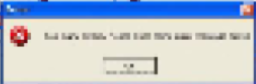

__________01 1010 1010011010 110010100______________________________
______________;________________________

______________________--------------%%%%%30&.exe
______________________________i dont like "good design"
"good design" exists as a product of capitalism
and design shouldnt exist to make money
we've been duped into loving minimalism
because its easy to manufacture?
1
i want to be an auteur designer
a maker
because i want to explore forms
we dont need anymore items, the traditional designer is no longer needed
so in order to explore, I must create on the small scale,
site specific
I am interested in a different kind of design,
design as a practice, rather than an industry
Im not overly concerned with speed, practicality, economy, or reach,
concerns such as those are killing animals and melting ice
and I dont think design alone can fix those problems, and im not entirely sure "design" is that important in the grand scheme of things. I love "designing" far too much to be the judge of its value, so maybe i will just continue practicing it.
*subject to change with my financial status, sadly
i also want to be a cowboy